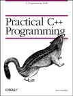

Book Review Catagories
C\C++
Java
Web Authoring
Science & Tech
|
C and C++ Book Reviews
|

|
Title: Practical C++ Programming
Author: Steve Oualline
Publisher: O'Reilly
Reviewer Name: Sam Cormier
E-mail address: sam@clark-web.com
|
A must for anybody learning C++, or looking to straighten out their understanding of the language. With thorough exercises in commenting
and clean code, it will help anybody to make the lives of the rest of us programmers a little bit easier. This 'chipmunk' book ranks as a classic
among the likes of the 'camel' book, or the 'tiger' book. You can't go wrong with O'Reilly.
|
|
|